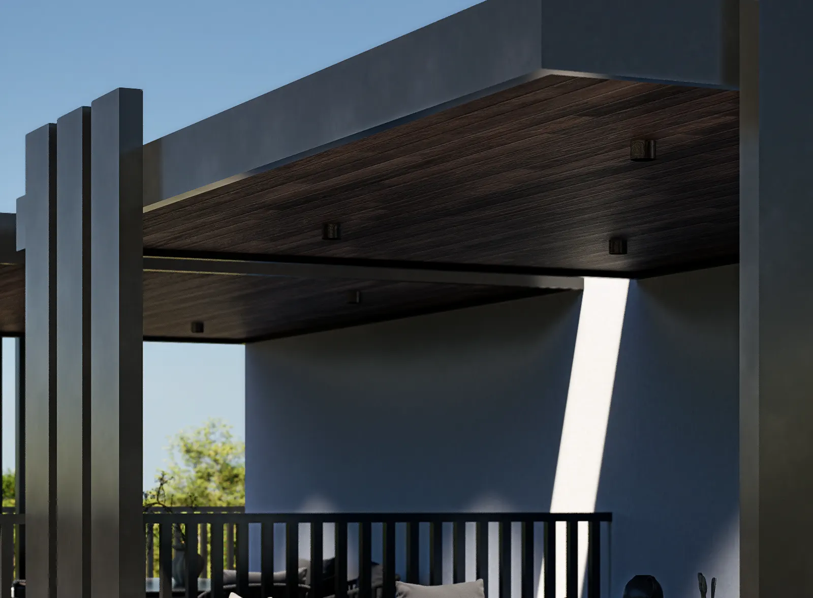
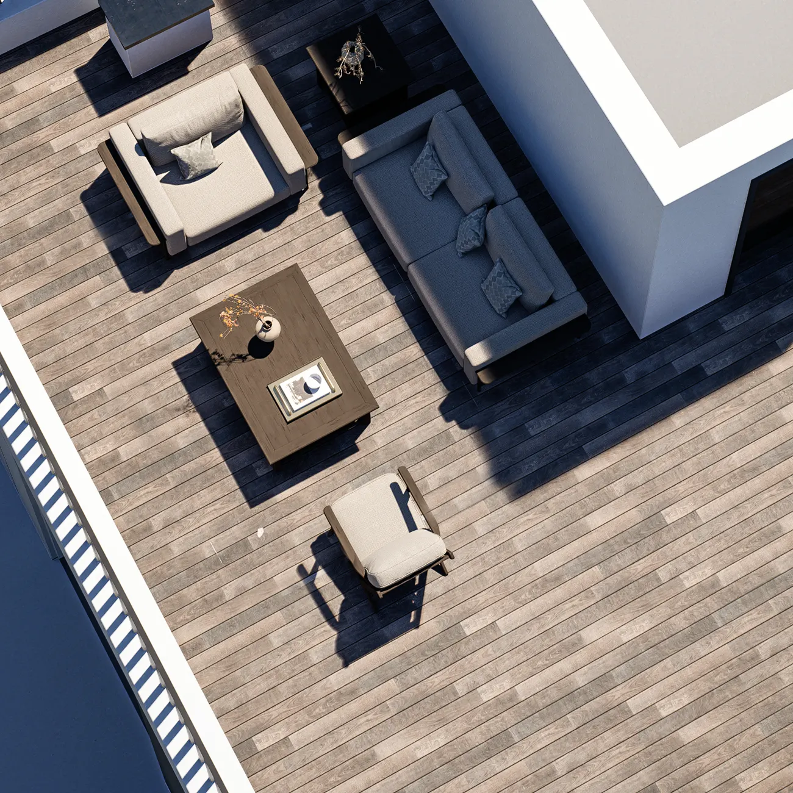
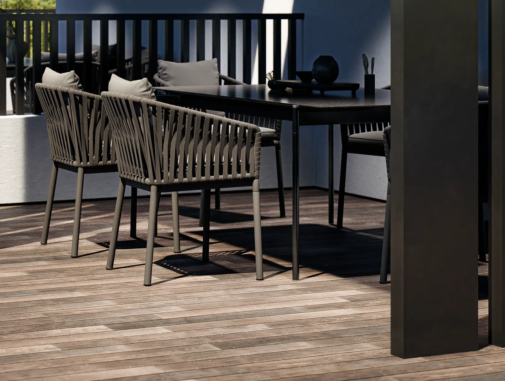
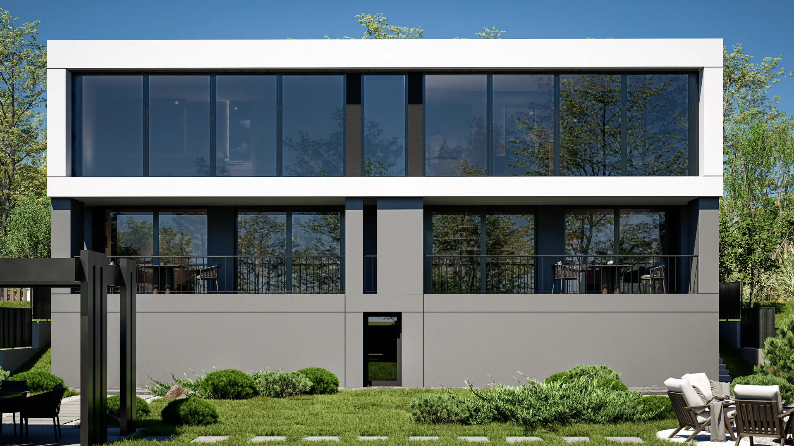

Дім 2 · QUADRO модерн
Матеріали, які видно з порога.
Матеріали

01
Пергола.
Дерево.

02
Тераса на даху.
Дощаний настил.
03
Фасад.
Білі площини і скло.

04
Тераса.
Камінь і дерево.
QUADRO

Дім 2 · QUADRO модерн
Так виглядає дім зблизька.